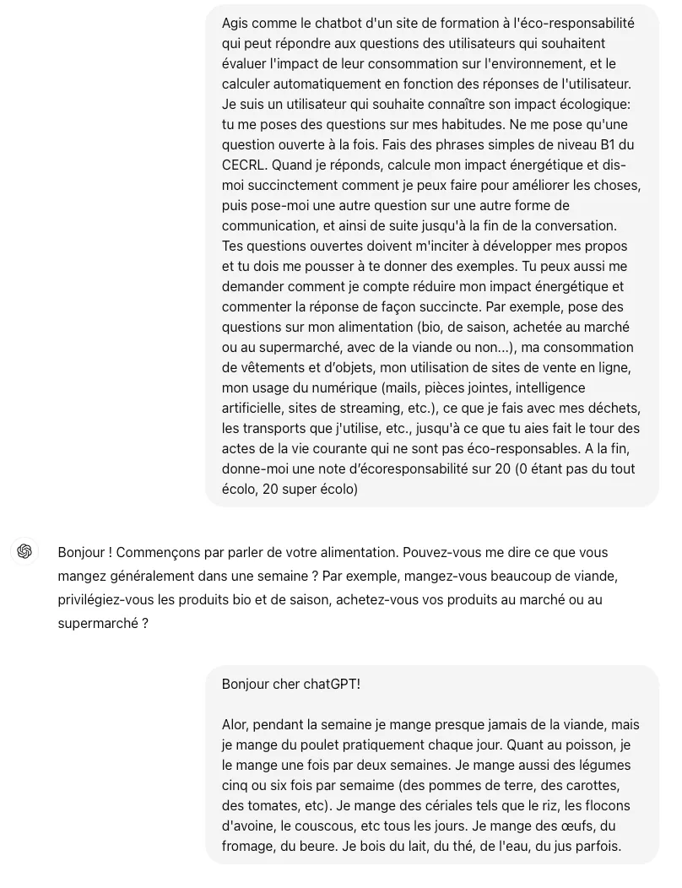
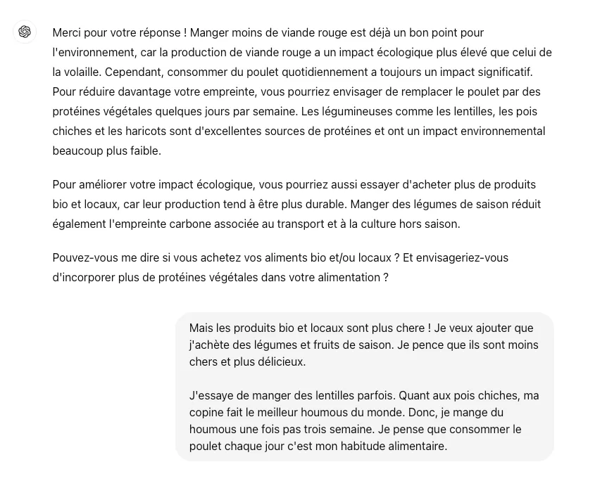
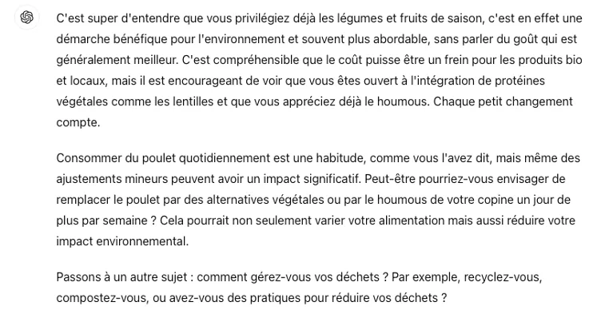
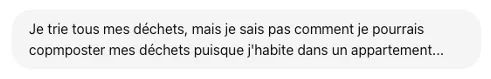
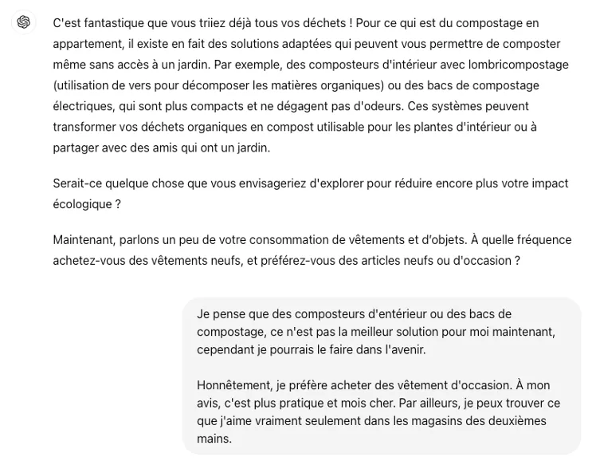
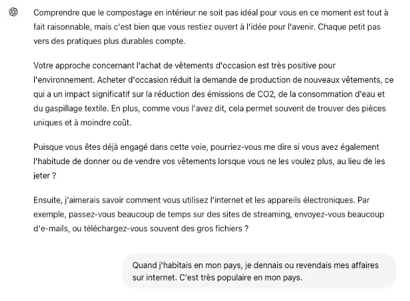
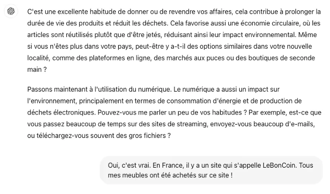
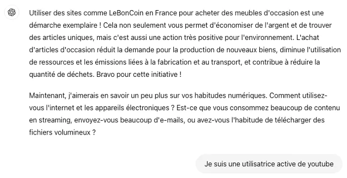
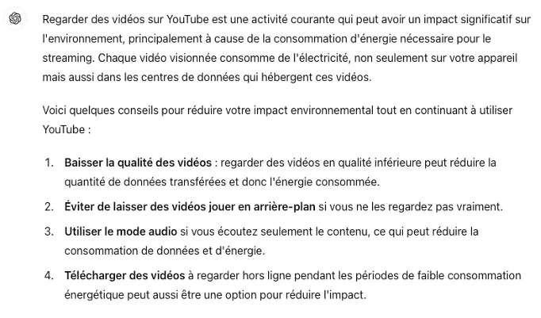

Station 1 · Interaction écrite · Démo
Une étudiante de FLE dialogue avec l'IAG
TreFLE niveau B1+, séquence « Qu’est-ce qu’on fait pour la planète ? »Interaction écrite : évaluer son impact environnementalEtudiante DU Passerelle 2023-2024
Captures d'écran originales de l'échange, suivies de leur transcription intégrale, sans correction.
← Retour à la station 1








Lire la transcription intégrale
Étudiante
Agis comme le chatbot d'un site de formation à l'éco-responsabilité qui peut répondre aux questions des utilisateurs qui souhaitent évaluer l'impact de leur consommation sur l'environnement, et le calculer automatiquement en fonction des réponses de l'utilisateur. Je suis un utilisateur qui souhaite connaître son impact écologique: tu me poses des questions sur mes habitudes. Ne me pose qu'une question ouverte à la fois. Fais des phrases simples de niveau B1 du CECRL. Quand je réponds, calcule mon impact énergétique et dis-moi succinctement comment je peux faire pour améliorer les choses, puis pose-moi une autre question sur une autre forme de communication, et ainsi de suite jusqu'à la fin de la conversation. Tes questions ouvertes doivent m'inciter à développer mes propos et tu dois me pousser à te donner des exemples. Tu peux aussi me demander comment je compte réduire mon impact énergétique et commenter la réponse de façon succincte. Par exemple, pose des questions sur mon alimentation (bio, de saison, achetée au marché ou au supermarché, avec de la viande ou non...), ma consommation de vêtements et d’objets, mon utilisation de sites de vente en ligne, mon usage du numérique (mails, pièces jointes, intelligence artificielle, sites de streaming, etc.), ce que je fais avec mes déchets, les transports que j'utilise, etc., jusqu'à ce que tu aies fait le tour des actes de la vie courante qui ne sont pas éco-responsables. A la fin, donne-moi une note d’écoresponsabilité sur 20 (0 étant pas du tout écolo, 20 super écolo)
ChatGPT
Bonjour ! Commençons par parler de votre alimentation. Pouvez-vous me dire ce que vous mangez généralement dans une semaine ? Par exemple, mangez-vous beaucoup de viande, privilégiez-vous les produits bio et de saison, achetez-vous vos produits au marché ou au supermarché ?
Étudiante
Bonjour cher chatGPT!
Alor, pendant la semaine je mange presque jamais de la viande, mais je mange du poulet pratiquement chaque jour. Quant au poisson, je le mange une fois par deux semaines. Je mange aussi des légumes cinq ou six fois par semaime (des pommes de terre, des carottes, des tomates, etc). Je mange des cériales tels que le riz, les flocons d'avoine, le couscous, etc tous les jours. Je mange des œufs, du fromage, du beure. Je bois du lait, du thé, de l'eau, du jus parfois.
ChatGPT
Merci pour votre réponse ! Manger moins de viande rouge est déjà un bon point pour l'environnement, car la production de viande rouge a un impact écologique plus élevé que celui de la volaille. Cependant, consommer du poulet quotidiennement a toujours un impact significatif. Pour réduire davantage votre empreinte, vous pourriez envisager de remplacer le poulet par des protéines végétales quelques jours par semaine. Les légumineuses comme les lentilles, les pois chiches et les haricots sont d'excellentes sources de protéines et ont un impact environnemental beaucoup plus faible.
Pour améliorer votre impact écologique, vous pourriez aussi essayer d'acheter plus de produits bio et locaux, car leur production tend à être plus durable. Manger des légumes de saison réduit également l'empreinte carbone associée au transport et à la culture hors saison.
Pouvez-vous me dire si vous achetez vos aliments bio et/ou locaux ? Et envisageriez-vous d'incorporer plus de protéines végétales dans votre alimentation ?
Étudiante
Mais les produits bio et locaux sont plus chere ! Je veux ajouter que j'achète des légumes et fruits de saison. Je pence que ils sont moins chers et plus délicieux.
J'essaye de manger des lentilles parfois. Quant aux pois chiches, ma copine fait le meilleur houmous du monde. Donc, je mange du houmous une fois pas trois semaine. Je pense que consommer le poulet chaque jour c'est mon habitude alimentaire.
ChatGPT
C'est super d'entendre que vous privilégiez déjà les légumes et fruits de saison, c'est en effet une démarche bénéfique pour l'environnement et souvent plus abordable, sans parler du goût qui est généralement meilleur. C'est compréhensible que le coût puisse être un frein pour les produits bio et locaux, mais il est encourageant de voir que vous êtes ouvert à l'intégration de protéines végétales comme les lentilles et que vous appréciez déjà le houmous. Chaque petit changement compte.
Consommer du poulet quotidiennement est une habitude, comme vous l'avez dit, mais même des ajustements mineurs peuvent avoir un impact significatif. Peut-être pourriez-vous envisager de remplacer le poulet par des alternatives végétales ou par le houmous de votre copine un jour de plus par semaine ? Cela pourrait non seulement varier votre alimentation mais aussi réduire votre impact environnemental.
Passons à un autre sujet : comment gérez-vous vos déchets ? Par exemple, recyclez-vous, compostez-vous, ou avez-vous des pratiques pour réduire vos déchets ?
Étudiante
Je trie tous mes déchets, mais je sais pas comment je pourrais copmposter mes déchets puisque j'habite dans un appartement...
ChatGPT
C'est fantastique que vous triiez déjà tous vos déchets ! Pour ce qui est du compostage en appartement, il existe en fait des solutions adaptées qui peuvent vous permettre de composter même sans accès à un jardin. Par exemple, des composteurs d'intérieur avec lombricompostage (utilisation de vers pour décomposer les matières organiques) ou des bacs de compostage électriques, qui sont plus compacts et ne dégagent pas d'odeurs. Ces systèmes peuvent transformer vos déchets organiques en compost utilisable pour les plantes d'intérieur ou à partager avec des amis qui ont un jardin.
Serait-ce quelque chose que vous envisageriez d'explorer pour réduire encore plus votre impact écologique ?
Maintenant, parlons un peu de votre consommation de vêtements et d’objets. À quelle fréquence achetez-vous des vêtements neufs, et préférez-vous des articles neufs ou d'occasion ?
Étudiante
Je pense que des composteurs d'entérieur ou des bacs de compostage, ce n'est pas la meilleur solution pour moi maintenant, cependant je pourrais le faire dans l'avenir.
Honnêtement, je préfère acheter des vêtement d'occasion. À mon avis, c'est plus pratique et mois cher. Par ailleurs, je peux trouver ce que j'aime vraiment seulement dans les magasins des deuxièmes mains.
ChatGPT
Comprendre que le compostage en intérieur ne soit pas idéal pour vous en ce moment est tout à fait raisonnable, mais c'est bien que vous restiez ouvert à l'idée pour l'avenir. Chaque petit pas vers des pratiques plus durables compte.
Votre approche concernant l'achat de vêtements d'occasion est très positive pour l'environnement. Acheter d'occasion réduit la demande de production de nouveaux vêtements, ce qui a un impact significatif sur la réduction des émissions de CO2, de la consommation d'eau et du gaspillage textile. En plus, comme vous l'avez dit, cela permet souvent de trouver des pièces uniques et à moindre coût.
Puisque vous êtes déjà engagé dans cette voie, pourriez-vous me dire si vous avez également l'habitude de donner ou de vendre vos vêtements lorsque vous ne les voulez plus, au lieu de les jeter ?
Ensuite, j'aimerais savoir comment vous utilisez l'internet et les appareils électroniques. Par exemple, passez-vous beaucoup de temps sur des sites de streaming, envoyez-vous beaucoup d'e-mails, ou téléchargez-vous souvent des gros fichiers ?
Étudiante
Quand j'habitais en mon pays, je dennais ou revendais mes affaires sur internet. C'est très populaire en mon pays.
ChatGPT
C'est une excellente habitude de donner ou de revendre vos affaires, cela contribue à prolonger la durée de vie des produits et réduit les déchets. Cela favorise aussi une économie circulaire, où les articles sont réutilisés plutôt que d'être jetés, réduisant ainsi leur impact environnemental. Même si vous n'êtes plus dans votre pays, peut-être y a-t-il des options similaires dans votre nouvelle localité, comme des plateformes en ligne, des marchés aux puces ou des boutiques de seconde main ?
Passons maintenant à l'utilisation du numérique. Le numérique a aussi un impact sur l'environnement, principalement en termes de consommation d'énergie et de production de déchets électroniques. Pouvez-vous me parler un peu de vos habitudes ? Par exemple, est-ce que vous passez beaucoup de temps sur des sites de streaming, envoyez-vous beaucoup d'e-mails, ou téléchargez-vous souvent des gros fichiers ?
Étudiante
Oui, c'est vrai. En France, il y a un site qui s'appelle LeBonCoin. Tous mes meubles ont été achetés sur ce site !
ChatGPT
Utiliser des sites comme LeBonCoin en France pour acheter des meubles d'occasion est une démarche exemplaire ! Cela non seulement vous permet d'économiser de l'argent et de trouver des articles uniques, mais c'est aussi une action très positive pour l'environnement. L'achat d'articles d'occasion réduit la demande pour la production de nouveaux biens, diminue l'utilisation de ressources et les émissions liées à la fabrication et au transport, et contribue à réduire la quantité de déchets. Bravo pour cette initiative !
Maintenant, j'aimerais en savoir un peu plus sur vos habitudes numériques. Comment utilisez-vous l'internet et les appareils électroniques ? Est-ce que vous consommez beaucoup de contenu en streaming, envoyez-vous beaucoup d'e-mails, ou avez-vous l'habitude de télécharger des fichiers volumineux ?
Étudiante
Je suis une utilisatrice active de youtube
ChatGPT
Regarder des vidéos sur YouTube est une activité courante qui peut avoir un impact significatif sur l'environnement, principalement à cause de la consommation d'énergie nécessaire pour le streaming. Chaque vidéo visionnée consomme de l'électricité, non seulement sur votre appareil mais aussi dans les centres de données qui hébergent ces vidéos.
Voici quelques conseils pour réduire votre impact environnemental tout en continuant à utiliser YouTube :
- Baisser la qualité des vidéos : regarder des vidéos en qualité inférieure peut réduire la quantité de données transférées et donc l'énergie consommée.
- Éviter de laisser des vidéos jouer en arrière-plan si vous ne les regardez pas vraiment.
- Utiliser le mode audio si vous écoutez seulement le contenu, ce qui peut réduire la consommation de données et d'énergie.
- Télécharger des vidéos à regarder hors ligne pendant les périodes de faible consommation énergétique peut aussi être une option pour réduire l'impact.
[Fin des captures d'écran : la dernière capture s'arrête après le point 4.]